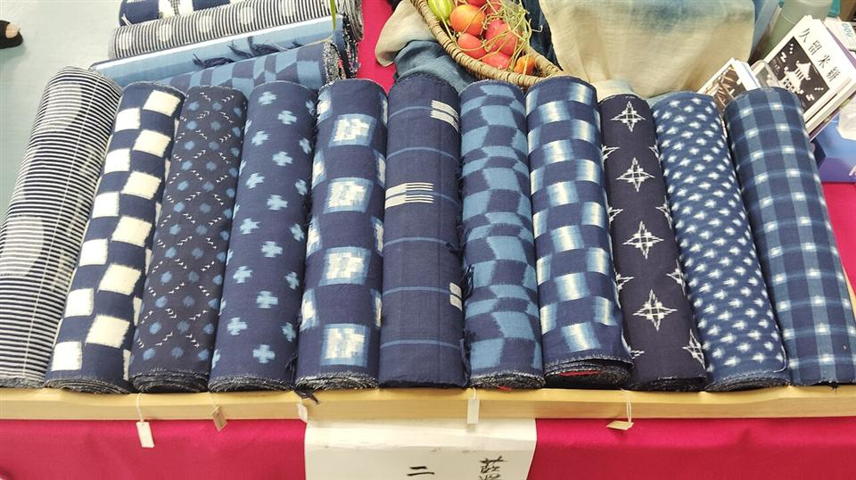

What is it?
Kurume kasuri is a woven cotton cloth from around Kurume in Fukuoka. It is known for deep indigo blue and soft-edged white patterns.
The threads are tied and dyed before weaving, so the pattern appears as the cloth is woven. It is cool in summer, warm in winter and gets softer with use. (Kogei Japan, n.d.)
History
The craft began with a 12-year-old girl called Den Inoue. She noticed white spots on faded indigo clothes, took the cloth apart, and worked out how to dye new threads in the same way.
By 1827 she had more than 1,000 students, and the cloth became known across the country. (Kogei Japan, n.d.)
Why is it endangered?
When people in Japan switched to Western clothes, they bought less kimono cloth. (Kogei Japan, n.d.)
There were about 1,500 workshops in the 1930s. The owner of a local craft hotel says only about 20 remain. (National Geographic, 2025)
How you can help
- Try indigo dyeing with local experts when you visit Fukuoka.
- Stay somewhere that works with artisans. At Craft Inn Te, most of the money from craft experiences goes directly to the makers. (National Geographic, 2025)
- Buy modern items made from the cloth, such as clothes for everyday wear.
Quick facts
- Made in and around Kurume, Fukuoka
- Began with Den Inoue, who was 12
- About 1,500 workshops in the 1930s
- About 20 workshops today (2025)
Sources
- Traditional Japanese crafts are at risk. Here’s how travelers can help, National Geographic, 2025
- Kurume Kasuri Textiles, Kogei Japan, n.d.